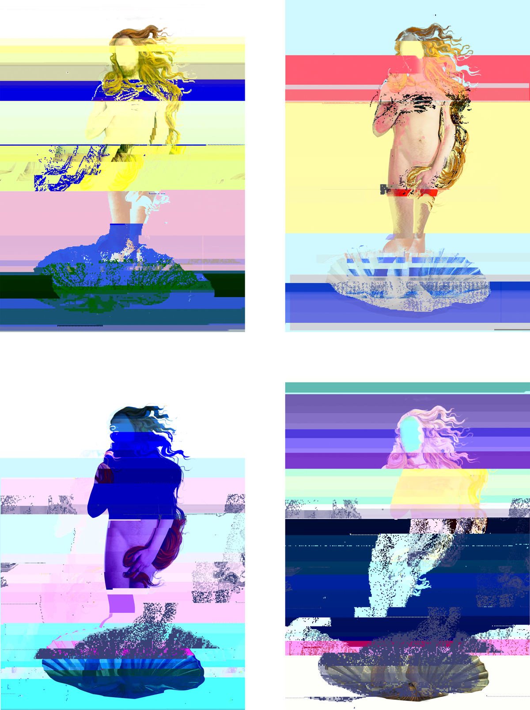
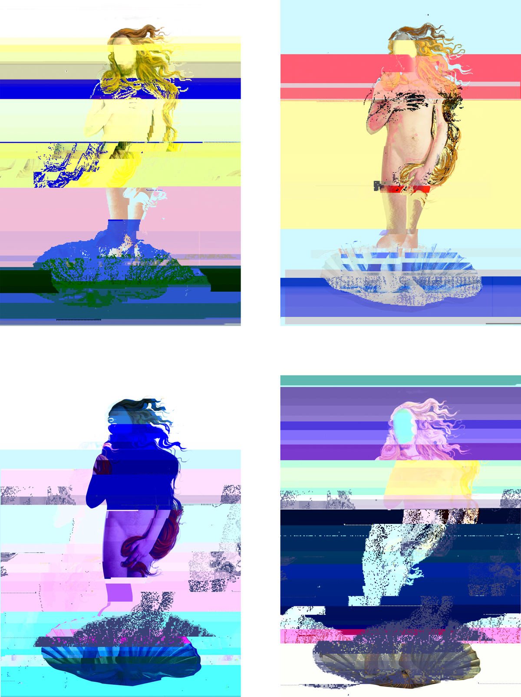

'Der Venus' is a digital edit of the artwork by Sandro Botticelli: The Birth of Venus (1485) and symbolises the beauty of man in the present day. As a man, you have to be robust, hard and endure everything unpleasant. Inside, you are sensitive and vulnerable and love pleasant things, but everybody wants to see the hard side of you. Imagine living in a world with no borders, where men and women would rather just be themselves, facing away from the classic gender identities. The role models for both genders seem to be slowly merging and creating a kind of symbiosis.
…